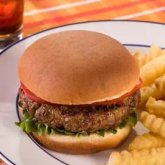

burger

this is american traditional dish
anyone can really make it...
Ingredients
- 2 pounds ground beef
- 2 eggs
- 1 teaspoon Worcestershire sauce
- 2 cups cooked bacon, chopped
- 1 cup green onions, chopped
- 1 tablespoon minced garlic
- 6 ounces Danish blue cheese, crumbled
Steps
- step 1
- Preheat grill to medium heat.
- step 2
- Whisk eggs in a bowl and stir in Worcestershire sauce,
bacon, green onion, garlic, and blue cheese.
- step 3
- In a large bowl, mix beef and egg mixture with a fork.
- step 4
- Shape into eight burger patties.
- step 5
- Whisk blackening spice ingredients together and dust onto patties.
Be sure to lightly rub the blackening spice onto each side and
let rest in the refrigerator for ten minutes.
- step 6
- Then place burgers on the grill and cook to desired temperature.
- step 7
- Once cooked, place each burger into a warmed bun and add your favorite toppings.